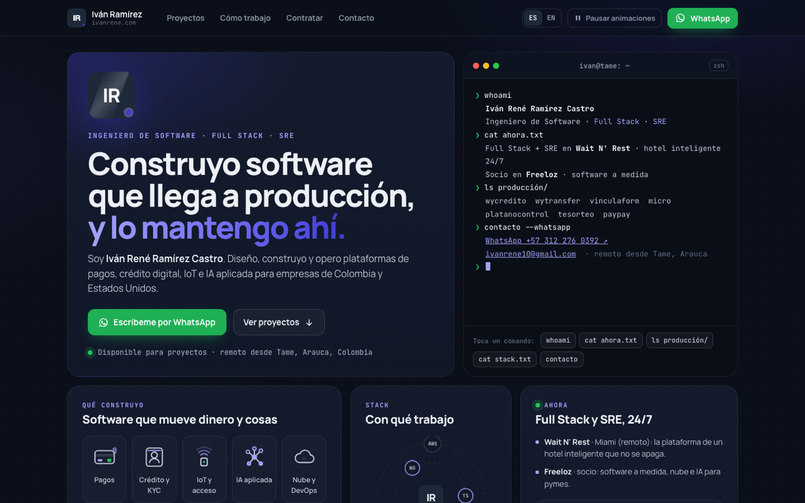
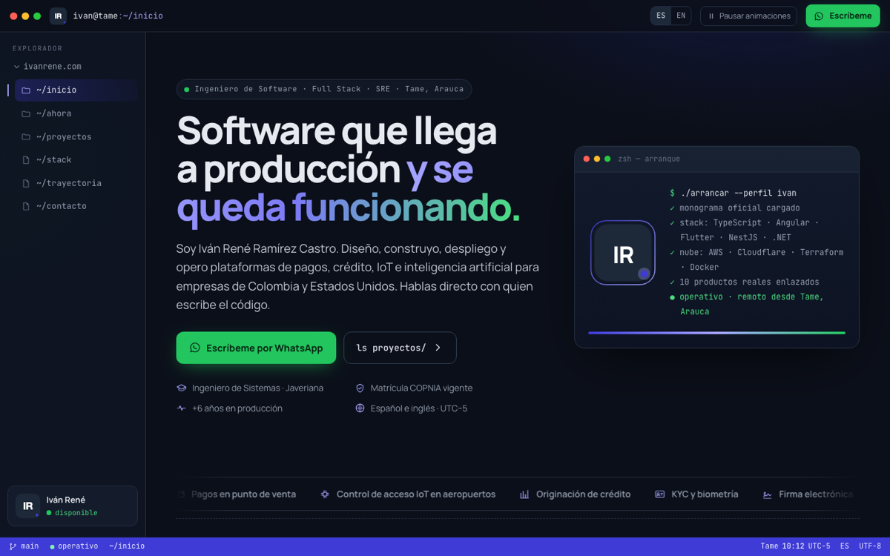
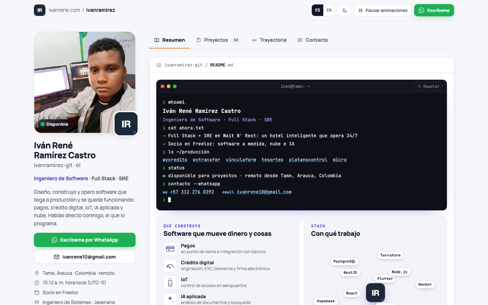

ivanrene.com · propuestas
Bento + Terminal
Tres propuestas para la nueva web, en la misma línea del perfil de GitHub y con el monograma oficial. Cada una está publicada en su propio subdominio.

01
Bento
Inicio en cuadrícula bento oscura: cada tarjeta es un pequeño mundo animado, con la terminal que escribe al lado del monograma.
propuesta-bento.ivanrene.com ↗
02
Terminal
La web como un espacio de trabajo: árbol de archivos, comandos con botones y cada sección renderizada como salida rica.
propuesta-terminal.ivanrene.com ↗
03
Perfil
La más parecida a tu perfil de GitHub: columna de perfil, pestañas, proyectos fijados y repos reales en vivo. Claro y oscuro.
propuesta-perfil.ivanrene.com ↗